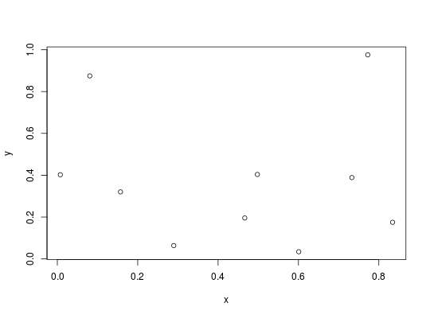

Convenience function for sourcing a remake script (or other
arbitrary code) that is present as a character vector rather than
saved in a file. This just takes
care of writing the character vector to a temporary file and
running R's source over it. It will also source
other arbitrary sets of R code that are character vectors rather
than files.
source_character(str, envir = .GlobalEnv, rewrite_source = TRUE)
source within a
script will still be evaluated in the global environment, so this
may have side-effects when running in a non-global
environment. Setting rewrite_source=TRUE (the default)
attempts to rewrite top-level calls to source to source
locally. This is likely error prone but the current
implementation matches the way that make_script produces
calls to source.The environment into which the code is sourced,
invisibly. This is primarily useful when used as
source_remake_script(script, envir=new.env()), as the
environment created in the call is returned.
str <- c("x <- runif(10)", "y <- runif(10)", "plot(x, y)") e <- source_character(str, envir=new.env())ls(e) # x, y#> [1] "x" "y" #>